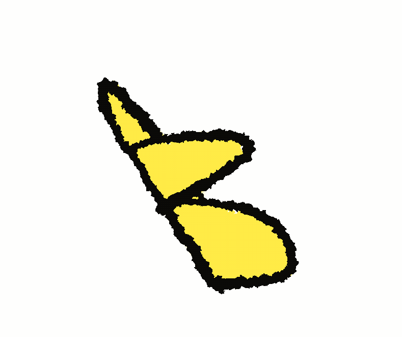
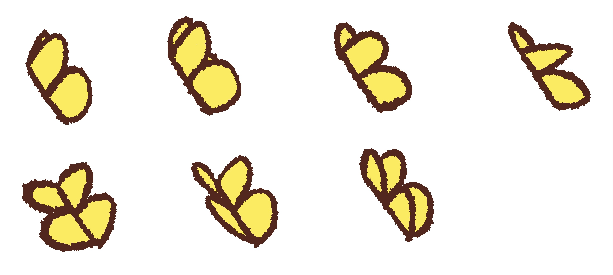

First Scenes
Before any animating could be done, I had to draw the backgrounds. In total, there were only 3 different ones, which made this process easier and quicker. I also had to decide on an art style for the animation, and as I was drawing everything by hand, it ended up being pretty simple. That also meant redesigning the marbles so they fit in with the backgrounds.
Backgrounds
Desk

Side of desk (falling scenes)

Ground

Marbles: Redesigned
Very First Animated Scene (kind of)
The very first thing I animated was the butterfly that was supposed to come in and tip the blue marble. It consisted of a total of 7 different butterfly positions that were repeated to look like flapping.
The first version of the butterfly flapping
The final frames used
From there, it was pretty straightforward. There was a lot of fiddling with the fps and stuff like motion blurs that helped with making the marbles look like they’re moving. A lot.